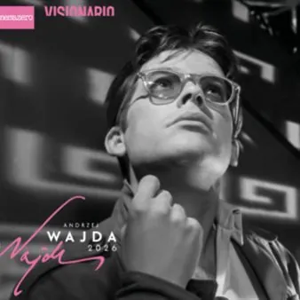

da mar 10 nov a mar 1 dic
Immagini dalla tempesta - Il cinema di Andzrej Wajda
dal 10 novembre 2026 al 1 dicembre 2026 Visionario Nato esattamente un secolo fa (1926–2016), Andrzej Wajda è stato il più influente e importante regista del cinema polacco contemporaneo e uno dei grandi maestri del cinema europeo del Novecento. Ha creato e raccontato per oltre…
 Indicazioni
Indicazioni
- Costi e prenotazioni
- Costo non indicato · Prenotazione non indicata
- Programma
- Programma da verificare. Apri la fonte ufficiale per orari e possibili aggiornamenti.
- In caso di maltempo
- Nessuna indicazione specifica pubblicata.
- Note
- Acquisito automaticamente dalla fonte.
L’EVENTO
Descrizione completa
Nato esattamente un secolo fa (1926–2016), Andrzej Wajda è stato il più influente e importante regista del cinema polacco contemporaneo e uno dei grandi maestri del cinema europeo del Novecento. Ha creato e raccontato per oltre sessant’anni di attività: dal principio degli anni Cinquanta fino alla Polonia postcomunista, dirigendo più di 40 film e vincendo i premi cinematografici più prestigiosi, fino all’Oscar alla carriera nel 2000. In occasione del centenario della nascita, l’Istituto Polacco di Roma e WFDiF di Varsavia ci hanno invitato a (ri)scoprirne l’opera e il CEC, in collaborazione con l’Università degli Studi di Udine, ha accettato con entusiasmo la proposta. Dal 10 novembre potremo vedere al Visionario una selezione di quattro tra i suoi film più emblematici, incluso Cenere e diamanti considerato il capolavoro del regista e appena presentato nella sua nuova e inedita versione restaurata 4K al festival di Venezia nella sezione “Classici”. La mini rassegna ripercorre alcune tappe fondamentali della vasta filmografia del regista, testimone del suo tempo e instancabile ricercatore di nuove forme di espressione. Oltre a Cenere e diamanti , si potranno vedere anche I dannati di Varsavia (1957, Premio Speciale della Giuria al festival di Cannes), L’uomo di marmo (1976, forse il suo film più noto in Italia) e Le signorine di Wilko (1979, candidato all’Oscar come miglior film straniero). Caratterizzato da uno stile teso, fortemente drammatico, ora barocco, ora intimo, spesso inquieto, il suo cinema si è fatto interprete delle vicissitudini della tormentata storia del suo paese ed è sempre stato in fertile dialogo con la ricerca letteraria, artistica e teatrale polacca. Wajda ha riflettuto continuamente sul tema dell’eroismo e del sacrificio, della tragica impotenza dell’uomo davanti alla Storia e al destino, lasciandoci una testimonianza artistica di inestinguibile forza.
martedì 10 novembre ore 20.00
CENERE E DIAMANTI
POPIÓŁ I DIAMENT
(PL, 1958, 104’, DCP, 4K, vo sott. it.)
Introduce Francesco Pitassio Polonia 1945: tra speranze, dilemmi esistenziali e disillusioni, due partigiani dell’Armia Krajowa tentano di assassinare il dirigente comunista Szczuka. Il visionario capolavoro di Andrzej Wajda, tra i film simbolo della “Scuola polacca” e tra i più amati da registi come Martin Scorsese e Francis Ford Coppola. Nella versione restaurata presentata al Festival di Venezia 2026. martedì 17 novembre ore 20.00
I DANNATI DI VARSAVIA
KANAŁ
(PL, 1956, 97’, DCP, 4K vo sott. it)
Introduce Andrea Mariani Durante l’Insurrezione di Varsavia, un gruppo di insorti cerca una via di fuga attraverso le fogne, per raggiungere una zona non ancora controllata dai tedeschi. Una discesa agli inferi nel sottosuolo di una città e una nazione martoriate, una peregrinazione claustrofobica, giocata sui forti contrasti tra bianco e nero, che trasforma il ventre della città in un labirinto d’angoscia esistenziale. martedì 24 novembre ore 20.00
L’UOMO DI MARMO
CZŁOWIEK Z MARMURU
(PL, 1976, 160’, DCP, vo sott. it)
Introduce Francesco Pitassio La giovane regista Agnieszka indaga sulla storia di un muratore celebrato come eroe del lavoro nella Polonia stalinista. Ricostruendone la parabola, si confronta con le contraddizioni di un passato che il potere ha prima celebrato e poi cercato di cancellare. Uno dei film più celebri di Wajda, di forte impegno civile e politico, tra cinema d’inchiesta e riflessione sul potere delle immagini. Premio FIPRESCI a Cannes ‘78. martedì 1 dicembre ore 20.00
LE SIGNORINE DI WILKO
PANNY Z WILKA
(PL, FR, 1979, 118’, DCP, vo sott. it)
Introduce Emiliano Ranocchi Afflitto dalla morte di un amico, Wiktor decide di trascorrere un periodo di riposo nella campagna di Wilko, dove da giovane visse momenti intensi in una casa abitata da cinque sorelle. In uno spazio sospeso dominato da un’atmosfera crepuscolare, esaltata dalla fotografia di Edward Kosiński, Wajda realizza il secondo dei suoi film “lirici” ispirati all’opera di Iwaszkiewicz. Candidato come miglior film straniero all’Oscar. Per maggiori informazioni sulla programmazione consultare il sito www.visionario.movie oppure facebook.com/VisionarioUdine
IL PROGRAMMA
Programma e orari
Appuntamenti raccolti dalle fonti elencate. Dove manca un orario, non è ancora disponibile in questa scheda.
Programma pubblicato
- Dal 2026-11-10 al 2026-12-01
INFORMAZIONI UTILI
Prima di partire
- Controllare la fonte prima di partire.
ORGANIZZAZIONE